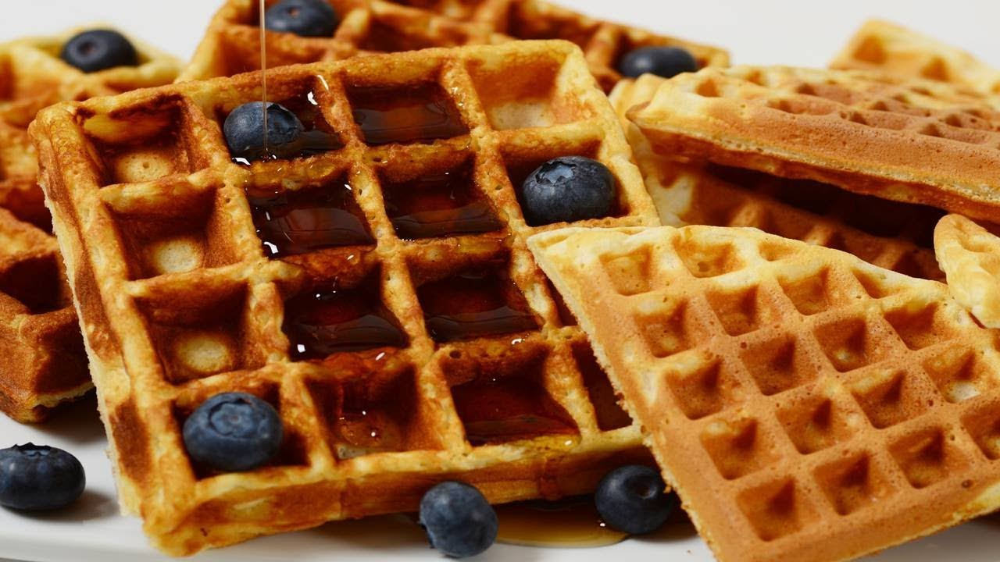

Full Stack Breakfast
Pancakes

Pancakes are amazing. Only silly people don’t like pancakes.
Ingredients
Butter
Batter
Honey
Jam
Bananas (thinly-sliced)
Directions
1. Pour batter into a large bowl.
2. Add in the thinly-sliced bananas.
3. Add butter if desired.
4. Heat a frying pan or griddle over medium to high heat.
5. Serve hot.
6. Repeat for each pancake.
Click Here for More Recipes | Click Here for Extra Recipes
Waffles

Waffles are amazing. Only silly people don’t like waffles.
Ingredients
Dream about the ingredients.
Butter
Batter
Honey
Jam
Blackberries
Directions
Learn how to make this goodness.
1. Pour batter into a large bowl.
2. Add in the blackberries.
3. Add butter if desired. (Can you have too much?)
4. Heat a waffle iron until hot.
5. Serve waffle hot.
6. Repeat for each waffle.
Click here for more waffle recipes | Click here for more waffle recipes